欢迎来到NotificationCat 使用手册
感谢您从Itch.io 或 Steam 商店购买此软件🤗此软件制作的目的是为了帮助请在此键入汉化组名称汉化组解决汉化资金问题。以便于汉化组汉化项目的顺利进行和日常维护支出！
版本更新：初步完善PC v1.2 / Android v2 / UWP v1.1.0.0
- PC / Android 新增实时连接状态
- 现在帮助手册会根据程序语言切换到相应网站
- Android 程序所有文本完全本地化，取消了非原生警告
- PC UI布局重新设计
- Android 修复了消息有时会在VR中提示两次的错误
- UWP程序布局重新设计
版本更新：首日更新PC v1.1 / Android v1 / UWP v1.0.0.0
- 添加QRcode二维码连接功能与说明
- 使用说明网站新增在线客服功能
- 使用说明网站新增二维码连接功能相关错误与UWP辅助程序全屏勿扰提示
- 使用说明网站新增Github反馈通道
- Android 程序系统要求由Android 10 降至Android 8
- UWP辅助程序修复因标题错乱暂时禁用标题功能（将在下一个版本恢复）
概述
什么是NotificationCat🤔
NotificationCat VR（通知猫咪VR）是一个基于BOLL7708开源项目OpenVRNotificationPipe的消息通知转发工具。
这个工具可以在您游玩VR时，将Android® 设备或 iOS® 设备上的通知消息转发到VR中。让您无需摘下头戴显示器（VR）便可获取通知消息的具体信息，如通知标题，通知内容等。
付费软件能给我带来什么💴
同时支持Android®与iOS®设备📱：您可能会使用过其他类似的通知转发VR的软件，但我们是支持iOS最完善的一款！
长期更新与开发者支持👍：通知猫咪VR作为一款付费应用，拥有长期的更新计划与完善的开发者支持。我们不仅会在软件的生命周期中添加新的功能，还会响应来自用户的反馈。包括采纳新功能建议与修复BUG！
超级快的工单支持📧：在使用软件时遇到问题？软件支持通过各种联系方式联系作者并为您提供帮助！
支持汉化组的工作😘：您的购买会帮助汉化组解决汉化项目或日常维护所面临的资金问题，帮助我们制作出更好的主机游戏汉化作品！
软件使用配置要求💻
PC 操作系统： Windows 10 Version 1809 秋季更新或以上版本
如果您的操作系统低于 Windows 10 Version 1809 秋季更新以上版本，则吐司模式不可用。您无法将iOS®设备的消息转发至VR！
Android 操作系统：Android 10 或以上版本
如果您的Android® 操作系统版本低于Android 8，则无法运行通知猫咪VR的Android®程序。
针对华为HarmonyOS
HarmonyOS并未经过开发者测试，如果你的HarmonyOS满足Android 10 API或以上版本则理论上可以使用通知猫咪VR的Android®程序。但可能会出现出乎意料的错误，且HarmonyOS不在工单支持的范围内。
iOS 操作系统：iOS 14.0 或更高版本的 iPhone
安装软件💿
Windows🖥️
- 从您的软件购买处下载并安装软件
- 运行软件（在此处遇到问题？请参考：错误手册 页面来解决。）
考虑开启随SteamVR启动
此选项可以让程序在SteamVR启动时自启动，从而避免每次游玩VR时手动开启软件。
Android📱
- 从受欢迎的认证应用程序市场—ApkPure或从此网站下载通知猫咪VR的Android®程序。
- 安装APK应用程序
为何无法从Google Play获取应用？怎能证明该应用安全性？
Google Play会对每个上架其应用市场的开发者账户收取一笔注册资金。我们暂时无力支付，不过让程序登录Google Play商店在软件的更新计划中。且应用通过受欢迎的认证应用程序市场ApkPure人工审核，足可以证明程序中不包含任何恶意代码。
iPhone🍎
快速使用🏎️
启动SteamVR后，打开软件时您的状态栏应该均显示为在线（在此处遇到问题？请参考：错误手册 页面来解决。） 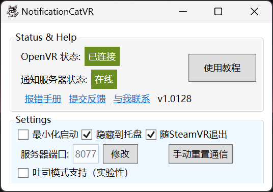
- 使用Android® 设备
打开通知猫咪VR的Android® 程序，会弹出通知获取权限的设置页面。 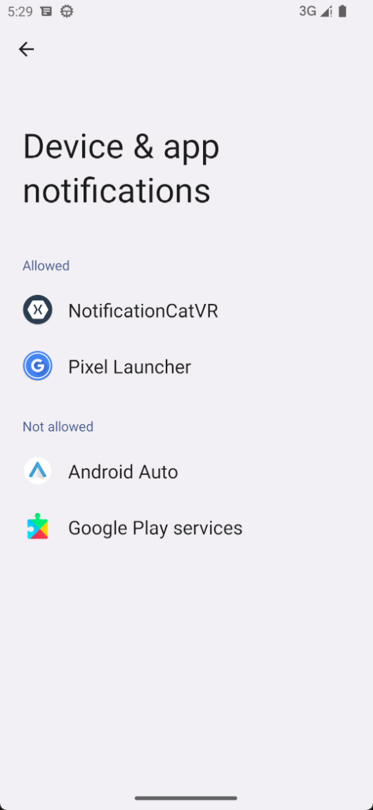
点击NotificationCatVR,进入通知权限获取的应用详细页
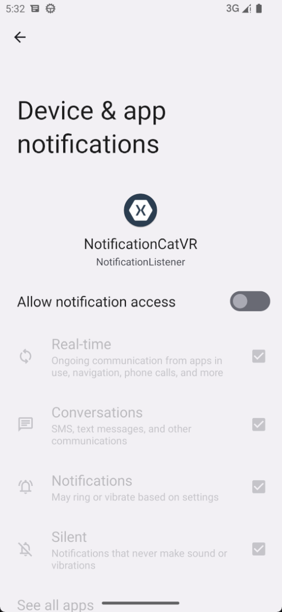
允许程序获得所有通知的权限
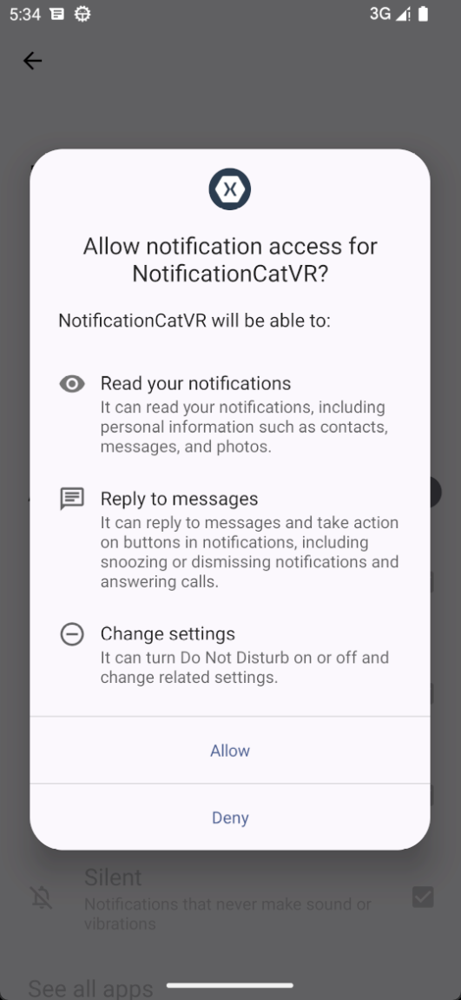
返回到应用内，输入电脑ip地址后点击连接或直接扫描二维码，连接成功后电脑会弹出提示。
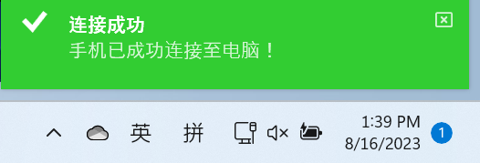 （在此处遇到问题？请参考：错误手册 页面来解决。）
国产Android OS须知
每次启动应用时都必须重新关闭——开启“获取所有应用程序通知”的权限，否则将出现无法获取消息或产生出乎意料的错误。类原生OS如Google Pixel等不受影响！
- 使用iOS® 设备
将您的iPhone手机与微软程序“手机链接”连接，确保“手机链接”可以正常获取iPhone通知。 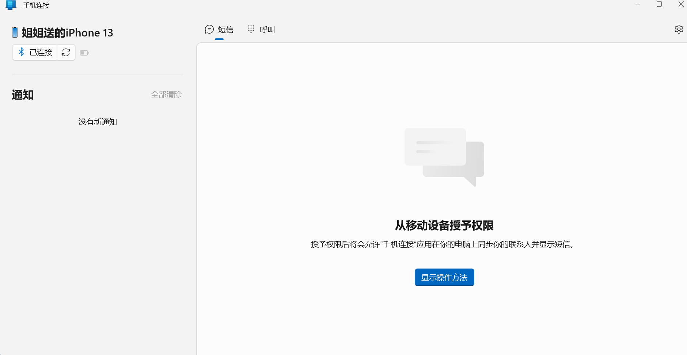
勾选NotificationVR 程序上的 吐司模式支持（实验性）
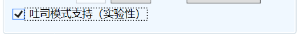
在弹出的吐司模式辅助程序中允许获取通知权限即可。
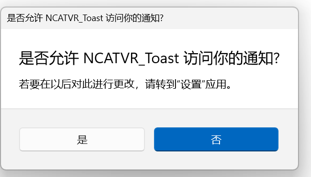
吐司模式说明
吐司模式需要特殊配置才能使用，如果您勾选吐司模式后提示“没有可打开此链接的应用”请参考 吐司模式 一节
吐司模式🍞
吐司模式是本软件的特色之一
由于Apple 开发者政策原因和保护iOS设备的安全性，苹果公司不允许一般开发者/软件公司使用“获取iPhone上所有系统通知”的权限。
而由Microsoft 微软开发的Windows应用“手机链接 Phone Link”则允许用户将其iPhone连接至Windows并获取Toast通知。但非Windows Mixed Reality 用户（如使用VIVE,Oculus等设备）无法将Windows上的Toast通知转发至VR中。
为了将使用VIVE,Oculus，Index等设备的用户Toast通知转发至SteamVR，通知猫咪VR开发了UWP辅助程序来帮助转发，此UWP程序需要手动安装。
安装教程🚩
- 打开Windows 开发者模式
必须打开Windows 开发者模式，才能安装未经Microsoft Store授权的UWP应用，在设置中搜索开发者来跳转到开发者模式页面。
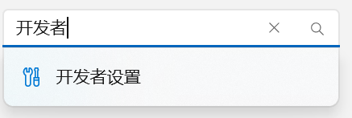
打开开发者模式
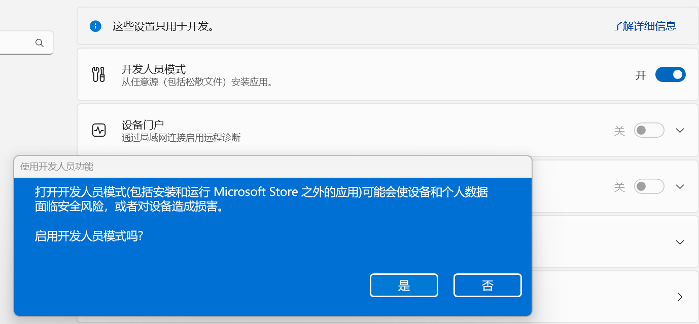
- 下载并安装UWP辅助程序
从此处下载UWP辅助程序
右键cer证书，选择安装，选择“将所有的证书都放入下列存储”，选择“受信任的根证书颁发机构”
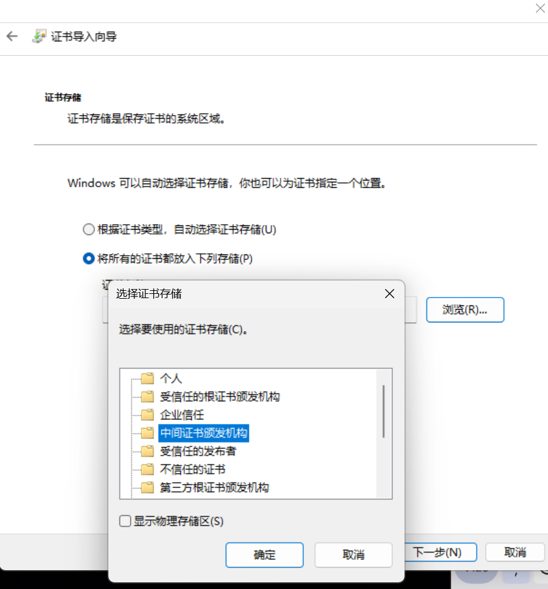
双击msibundle文件，在安装界面中点击安装。
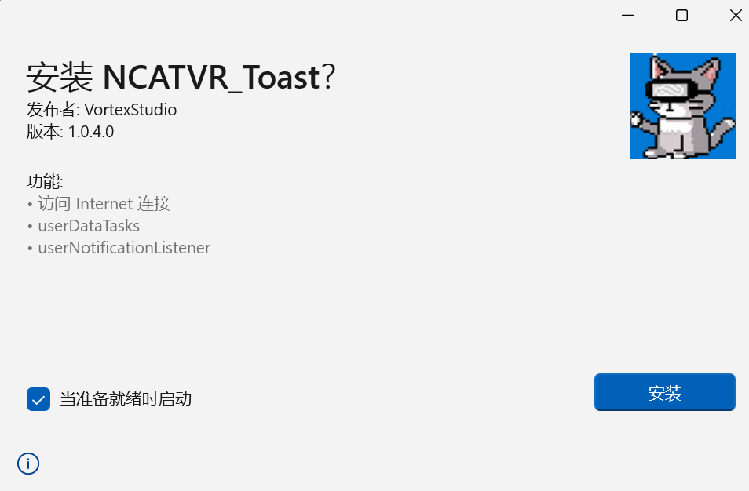
（在此处遇到问题？请参考：错误手册 页面来解决。）
- 关闭Windows 运行全屏程序时自动免打扰功能
在设置——系统——通知 中 关闭所有 自动启动“请勿打扰”选项
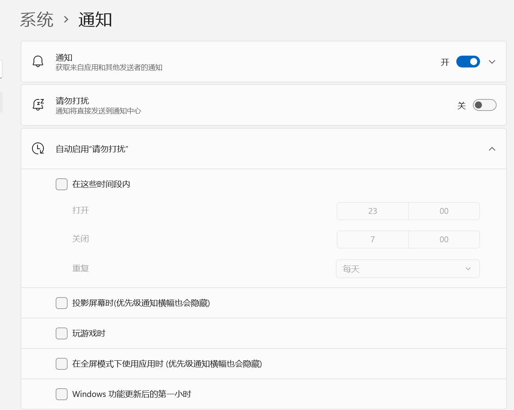
- 吐司模式注意事项
- 使用吐司模式时Windows不能设置为 “夜间模式” “勿扰” 等任何影响通知展示的模式或情景设置！
- 使用吐司模式时不能关闭手机链接应用。
- 使用吐司模式时不能关闭UWP辅助程序。
关于“手机链接”应用程序的错误处理
“手机链接”是微软开发的应用程序。任何有关手机链接的问题应向微软寻求帮助！
用户支持🙌
由于静态文档的局限性，软件允许用户向开发者提交工单来获取帮助。
通过开发者博客 通过QQ 通过电子邮件 通过Github issues
无论是通过工单还是即时聊天软件，您必须提供您的以下信息：
- 称呼
- Itch.io或Steam商店的购买凭据（ID单号或截图均可）
- 设备详细信息（Windows操作系统版本，Android版本或ios版本）
- 问题的详细描述
- 您尝试做了什么操作来解决此问题但是失败了
提交工单前请仔细阅读排错手册
处理工单的开发者精力有限，请避免提交“报错手册”中重复的问题至工单